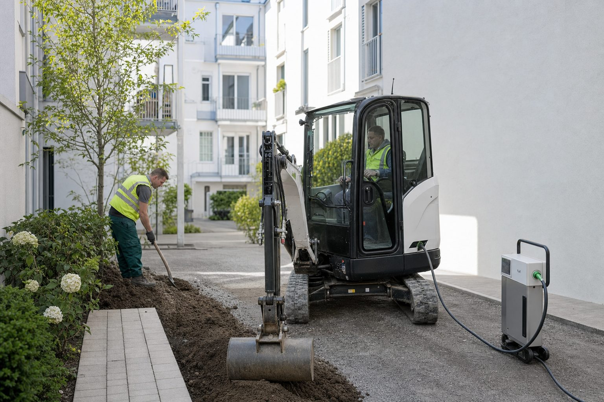

Leise Bagger, volle Akkus: Was die Elektromaschinen auf der GaLaBau 2026 wirklich können
Vier bis sechs Betriebsstunden, eine Stunde Laden, keine Abgase im Innenhof: Die Hersteller bringen elektrische Kompaktmaschinen nach Nürnberg, die für innerstädtische Baustellen gemacht sind. Ein Blick auf Daten, Einsatzfelder und die Frage nach den Kosten.
3 Min. Lesezeit